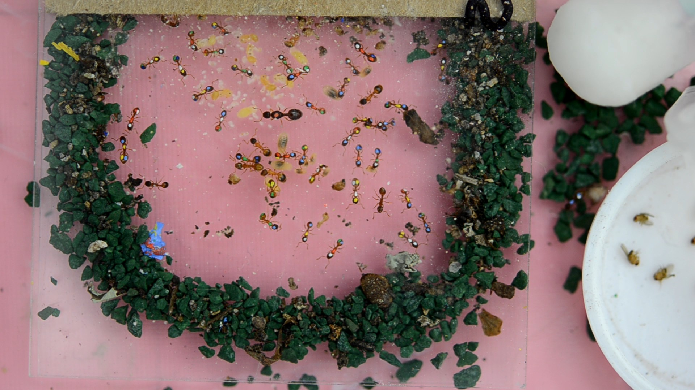
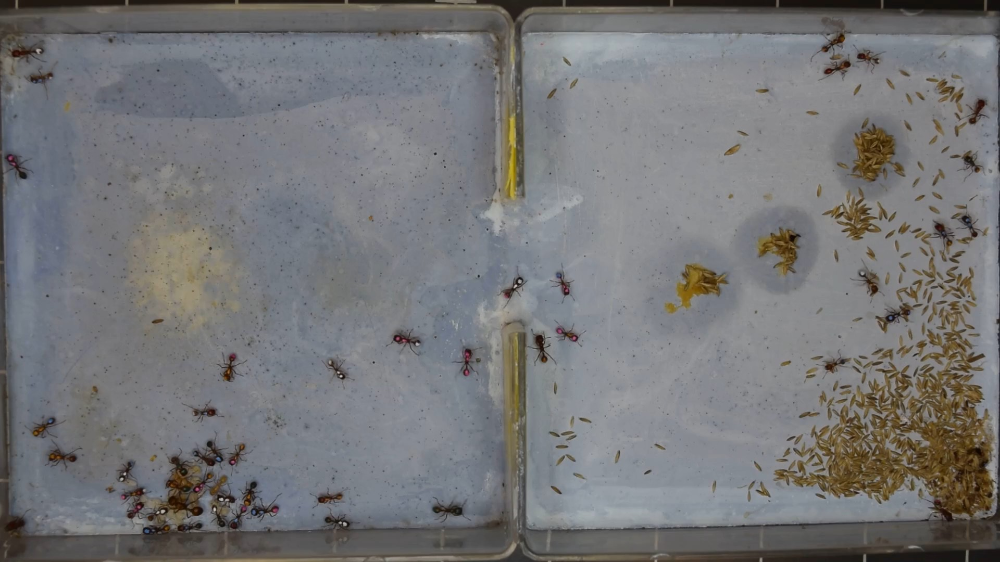

Scientists study the behavior of insects, like ants and bees, by analyzing their movement under a certain circumstance. In biology, this is called Biological Motion Analytics.
To set up the experiment, scientists build a nest to simulate several kinds of environment, put in ants at different locations, and record a video of how they behave.
When a biologist gets that video, the next step is to analyze ants' behavior. How does the scientist do that? Usually the case is to figure out the route for the insects. You might think it's a piece of cake with 5-minute video of only one ant. What if it's an hour long? What if 3 days? What if there are 50 ants in the video moving unpredicatably?
It would be grateful if all videos are 5 minutes long and with only one ant. But most biologists are interested in groups of ants. Even a video of 5 minutes long, a biologist needs to spend 20 or 30 working hours labelling each ant in every frame, let alone it's repetitive, tiring, tedious and frustrating.
At VIALab, computer scientists collaborate with biology professors and graduate students, developing tools and softwares to make their career life delightful and enjoyable. Talented VIALaber have implemented several cutting-edge techniques, such as machine learning and deep learning, to automate labelling such videos in less than 5 hours. I was glad to be of service as one of the VIALabers and carried out two of the amazing solutions.
What did I do? Stay tuned!